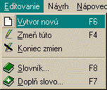
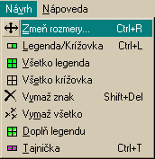
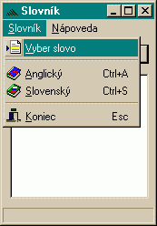

V aplikácii Spoluhláskové krí�ovky je mô�né popri riešení u� hotovıch spoluhláskovıch krí�oviek, vytvára� aj svoje vlastné. Na to slú�i navrhovací re�im. Mo�no to urobi� dvoma spôsobmi.
- editovaním u� vytvorenej krí�ovky - V tom prípade si najprv
naèítame nejakú spoluhláskovú krí�ovku (Krí�ovka|Èítaj alebo F3) a
potom sa prepneme do navrhovacieho re�imu príkazom Editovanie|Zmeò
túto alebo F4.
- vytvorením úplne novej krí�ovky - Kedyko¾vek mo�no vytvori� novú krí�ovku jednoduchım stlaèením F6 alebo cez menu Krí�ovka|Vytvor novú. Potom si zvolíme súbor, v ktorom budeme ma� novú krí�ovku ulo�enú. Štandardne sa nám vytvorí krí�ovka 10 x 10 s legendou na hornom a ¾avom okraji.
Zadávanie
Písmená
do krí�ovky zadávame priamo, podobne ako pri riešení. Ak chceme nejaké
vymaza� pou�ijeme Shift+Del alebo Návrh|Zma� znak. Ak chceme vymaza�
všetky, pou�ijeme Návrh|Vyma� všetko.
Rozmery krí�ovky jednoducho zmeníme vo¾bou Návrh|Zmeò Rozmery. Minimálne rozmery krí�ovky sú 1 x 1. Maximálne nie sú obmedzené. Ak krí�ovku zväèšíme, doplní sa nám o prázdne políèka.
Políèka
V
krí�ovke sa nachádza nieko¾ko typov políèok. Jednım znich je legenda,
odlíšená textúrov od ostatnıch. V prípade, �e nie je indíciou k �iadnemu
slovu, neobsahuje �iadne písmená. Legendu nie je nutné vypisova�. Generuje
sa automaticky vybratím spoluhlások slova a usporiadaním pod¾a abecedy.
Ïa¾ším typom políèka je samotná krí�ovka. V navrhovacom re�ime
do nej priamo vpisujeme slová, ktoré má krí�ovka obsahova�. Špeciálnym
typom typu krí�ovka je typ Tajnièka.
Zmena typu políèok
Typ meníme jednoducho dvojklikom alebo cez Návrh|Legenda/Krí�ovka.
Ak chceme všetky políèka spravi� krí�ovkou vyberieme si Všetko krí�ovka.
Políèka legendy sa stanú prázdnymi políèkami. Podobme funguje príkaz
Všetko legenda. Takto však prídeme o všetky písmená, ktoré sme
do krí�ovky vlo�ili. Vhodné je obèas pou�i� Doplò legendu ktorı
na legendu zmení všetky políèka bez písmen.
Tajnièka
Ak sme krí�ovku vyplnili, mô�me (ale nemusíme) oznaèi� tajnièku.
Mô�me to urobi� kedyko¾vek. Avšak, keï zmeníme typ nejaké políèka, tajnièky
sa nám odznaèia. Tajnièka je vo vıslednej krí�ovke odlíšená farebne
a nezobrazuje sa nám pri nej legenda. Ak chceme nejaké slovo oznaèi�
ako tajnièku, musíme ho najprv vybra� (kliknutím myši, alebo klávesami
Enter a Medzerník). Potom u� staèí stlaèít Ctrl+T ale Návrh|Tajnièka
a tajnièka je oznaèená.
Prilo�enı slovník nám ve¾mi u¾ahèí vyh¾adávanie slov do krí�oviek. Základnom funkciou je vyh¾adanie slov pod¾a zadaného fitra. Do po¾a zadáme nejaké slovo, na miesta kde sa mô�e nachádza� práe jeden ¾ubovo¾nı znak dáme hviezdièku. Program následne vyh¾adá v zvolenom slovníku najviac desa� slov vyhovujúcich danej podmienke.
Prepojenie krí�ovky a slovníka
V slovníku mo�no vyh¾adáva� priamo slová, ktoré sú práve vyznaèené v krí�ovke. Staèí v krí�ovke oznaèi� slovo, ktoré mô�e, ale nemusí obsahova� u� nejaké písmená. Potom stlaèíme F7 alebo vyberieme Editovane|Doplò slovo a slovník nám automaticky nájde vhodné slová. Dvojkliknutím na niektoré nájdené slovo sa nám samo doplní do krí�ovky. Podobnı efekt docielime pomocou menu Slovník|Vyber slovo.